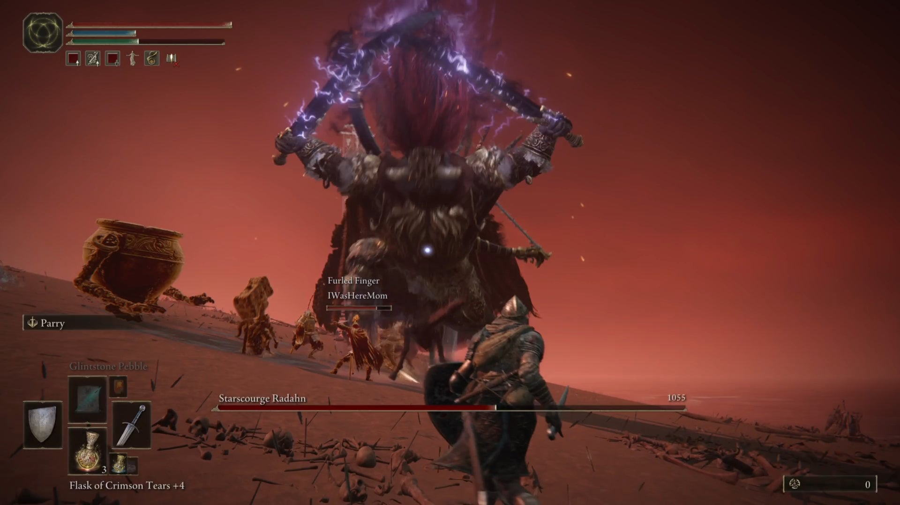
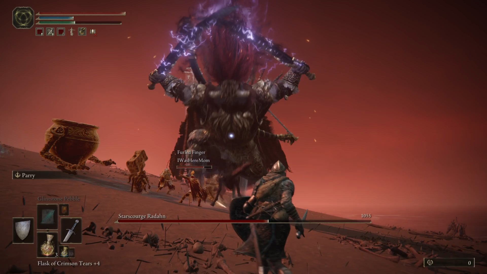

👑 Elden Ring: O Monumento Definitivo do RPG de Ação em Terras Intermédias
Elden Ring é um RPG de Ação em Terceira Pessoa (ARPG) desenvolvido pela FromSoftware e dirigido por Hidetaka Miyazaki. Lançado em 2022, o jogo é a fusão definitiva da jogabilidade Souls (desafiadora, metódica e gratificante) com um vasto e imersivo Mundo Aberto (Open World) que redefine a liberdade de exploração. A narrativa, desenvolvida em colaboração com o lendário autor George R. R. Martin, criou um universo de fantasia sombria e profunda: As Terras Intermédias (The Lands Between).
I. A Arquitetura da Lore: Deuses, Runas e a Fragmentação
A história de Elden Ring é contada de forma fragmentada, exigindo que o jogador se torne um arqueólogo, juntando pistas a partir de descrições de itens, diálogos crípticos e o design ambiental. É uma tragédia familiar em escala cósmica.
O Cosmos e a Grande Vontade
No topo da hierarquia cósmica está a Grande Vontade (Greater Will), um dos muitos Deuses Exteriores (Outer Gods) que governam o destino das Terras Intermédias, manifestando sua influência através da Térvore e da Ordem Áurea.
- A Térvore (Erdtree): A manifestação física e espiritual da influência da Grande Vontade. A árvore dourada emana a Graça, que guia os Maculados e sustenta a Ordem Áurea. Sua luz dourada é o símbolo de uma era de prosperidade, mas também de estagnação.
- O Anel Prístino (Elden Ring): Não é um objeto único, mas sim a representação física e metafísica da lei e da ordem do mundo. É uma coleção de Runas que governam aspectos da realidade, como Morte, Vida e Destino. Quando está intacto, a Ordem Áurea prevalece.
- A Runas da Morte (Destined Death): Originalmente parte do Anel Prístino, esta runa foi roubada por Maliketh, a Lâmina Negra, e selada sob o comando da Rainha Marika, tornando os habitantes do reino, inclusive os semideuses, essencialmente imortais. Sua ausência e o consequente banimento da morte real é a base da Ordem Áurea e a causa dos mortos-vivos.
A Família Real Corrompida (Semideuses)
A linhagem da Rainha Marika, a Eterna, é o foco da tragédia. Os semideuses são seus filhos e filhas (com Godfrey ou Radagon) que herdaram as Grandes Runas após a Fragmentação.
- Radagon e Marika: O grande segredo do lore é que Marika e Radagon são a mesma entidade, uma dualidade perfeita, mas conflituosa, refletindo a natureza da própria Ordem Áurea. Esta união e separação é central para a crise do reino.
- A Noite das Facas Negras: O ponto de virada da história. Liderada por Ranni, a Bruxa, e executada por assassinos de Facas Negras, o evento visava destruir a essência da Ordem:
- Godwyn, o Dourado, foi o primeiro a morrer. Sua alma foi assassina, mas seu corpo permaneceu vivo. Esta "morte imperfeita" corrompeu as raízes da Térvore, dando origem aos mortos-vivos (os Those Who Live in Death).
- A Fragmentação: Marika, enfurecida ou em desespero pela morte de Godwyn e pela imperfeição de sua própria Ordem, estilhaçou o Anel Prístino. Isso desencadeou a guerra dos semideuses pelas Grandes Runas.
- Os Semideuses e suas Runas:
- Godrick, o Enxertado: O mais fraco, vive em Castelo Tempesvéu.
- Rennala, Rainha da Lua Cheia: Não é tecnicamente uma semideusa (é humana e consorte de Radagon), mas é a líder da Academia de Raya Lucaria e guardiã de uma Grande Runa.
- General Radahn, o Flagelo Estelar: O mais respeitado dos guerreiros, com poder gravitacional que parou as estrelas.
- Lorde da Blasfêmia, Rykard: Se entregou a uma serpente gigante no Vulcão Gelmir.
- Morgott, o Rei Agouro: O único semideus leal que defende a Capital Leyndell, disfarçado como Margit.
- Mohg, Lorde do Sangue: Irmão gêmeo de Morgott, que busca reviver Miquella para criar um novo reino.
- Malenia, Lâmina de Miquella: Uma guerreira inigualável, sofrendo da maldição da Podridão Escarlate.
- Miquella, o Inapreciável: Irmão gêmeo de Malenia. Um Empyrean de enorme poder.
- O Maculado: Originalmente, Godfrey, o primeiro Lorde Prístino, e seus seguidores, foram despidos de sua Graça e exilados. Eles foram chamados de volta apenas após a Fragmentação, em uma última tentativa de restaurar o Anel. O jogador é um desses exilados.
II. O Mundo Aberto da FromSoftware: As Terras Intermédias
Elden Ring reinventou o conceito de open world com a filosofia de design de recompensa pela curiosidade. O jogador é guiado pela exploração orgânica e não por marcadores de missão.
1. Nível de Design em Camadas
O mapa de Elden Ring é vasto, mas extremamente denso, dividido em quatro tipos de áreas distintas: